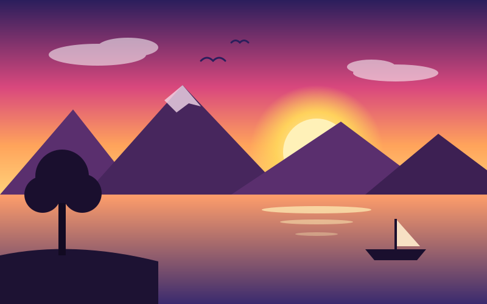

Before you edit anything, learn where everything lives. Click each yellow area on the screen below.

👆 Click any highlighted area to find out what it does.
Always keep a PSD, then export a copy for sharing.
File › Save As (Shift+Ctrl+S). Keeps every layer so you can keep editing.
File › Export › Export As. Small files for photos. No transparency.
Use when you need a transparent background, e.g. a logo.
Best for sending printed work to a printer or tutor.
On a Mac, use ⌘ Cmd instead of Ctrl and ⌥ Option instead of Alt.
| What it does | Shortcut |
|---|